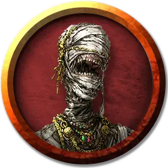

Горка Тарн
Gorka Tharn
Средняя Нежить, законно-злая, именной НИП

Класс Доспеха 17 (природный доспех)
Хиты 97 (13к8 + 39)
Скорость 20 футов
| мод | спас | ||
|---|---|---|---|
| СИЛ | 18 | +4 | +4 |
| ЛОВ | 10 | +0 | +0 |
| ТЕЛ | 17 | +3 | +8 |
| мод | спас | ||
|---|---|---|---|
| ИНТ | 11 | +0 | +5 |
| МДР | 18 | +4 | +9 |
| ХАР | 16 | +3 | +8 |
Навыки История +5, Религия +5
Уязвимость к урону огонь
Иммунитет к урону некротическая энергия, яд; дробящий, колющий, рубящий от немагических атак
Иммунитет к состояниям паралич, очарование, отравление, истощение, испуг
Чувства тёмное зрение 60 футов, пассивное Восприятие 14
Языки Дварфийский, Подземный
Опасность 15 (13000 опыта)
Бонус мастерства +5
Особенности
Сопротивление магии. Горка Тарн совершает с преимуществом спасброски от заклинаний и прочих магических эффектов.
Восстановление. . Уничтоженный Горка Тарн получает новое тело через 24 часа, если его сердце оставлено нетронутым, восстанавливает все хиты и вновь становится активной. Новое тело появляется в пределах 5 футов от сердца лорд-мумии.
Использование заклинаний. Горка Тарн является заклинателем 10-го уровня. Ее базовой характеристикой является Мудрость (Сл спасброска от заклинания 17, +9 к попаданию атаками заклинаниями). У неё подготовлены следующие заклинания жреца:
• Заговоры (неограниченно): священное пламя [sacred flame], чудотворство [thaumaturgy];
• 1 уровень (4 ячейки): направляющий снаряд [guiding bolt], приказ [command], щит веры [shield of faith];
• 2 уровень (3 ячейки): божественное оружие [spiritual weapon], тишина [silence], удержание личности [hold person];
• 3 уровень (3 ячейки): восставший труп [animate dead], рассеивание магии [dispel magic];
• 4 уровень (3 ячейки): изменение формы камня [stone shape], страж веры [guardian of faith];
• 5 уровень (2 ячейки): заражение [contagion], нашествие насекомых [insect plague];
• 6 уровень (1 ячейка):поражение [harm].
Действия
Мультиатака. Горка Тарн может использовать Ужасающий взгляд, и совершает одну атаку разлагающим кулаком.
Разлагающий кулак. Рукопашная атака оружием: +9 к попаданию, досягаемость 5 футов, одна цель. Попадание: Дробящий урон 14 (3к6 + 4) плюс урон некротической энергией 21 (6к6). Если цель — существо, она должна преуспеть в спасброске Телосложения Сл 16, иначе станет проклятой гнилью мумии. Проклятая цель не может восстанавливать хиты, и её максимум хитов уменьшается на 10 (3к6) за каждые прошедшие 24 часа. Если проклятье уменьшает максимум хитов цели до 0, цель умирает, а её тело становится прахом. Проклятье длится до тех пор, пока не будет снято заклинанием снятие проклятья или другой магией.
Ужасающий взгляд. Лорд-мумия нацеливается на одно существо, которое видит в пределах 60 футов. Если цель видит лорд-мумию, она должна преуспеть в спасброске Мудрости Сл 16 от этой магии, иначе станет испуганной до конца следующего хода мумии. Если цель проваливает спасбросок на 5 и более единиц, она также становится парализованной на тот же период. Цель, преуспевшая в спасброске, получает иммунитет к Ужасающему взгляду всех мумий и лорд-мумий на следующие 24 часа.
Увеличение (перезаряжается после короткого или продолжительного отдыха). На 1 минуту Горка Тарн магическим образом увеличивается в размере вместе со всем, что несёт и носит. Пока Горка Тарн увеличен, он является Большого размера, удваивает кости урона от атак оружием, основанных на Силе (уже учтено в атаке) и совершает с преимуществом проверки и спасброски Силы. Если Горка Тарну не хватает места, чтобы стать Большим, он приобретает максимальный размер, допустимый имеющимся пространством.
Невидимость (перезаряжается после короткого или продолжительного отдыха). Горка Тарн магическим образом становится невидимым в течение 1 часа или пока он не атакует, наложит заклинание, использует своё «Увеличение» или потеряет концентрацию (как если бы он концентрировался на заклинании). Любое снаряжение, одетое или носимое дуэргаром, становится невидимым вместе с ним.
Легендарные действия
Лорд-мумия может совершить 3 легендарных действия, выбирая из представленных ниже вариантов. За один раз можно использовать только одно легендарное действие, и только в конце хода другого существа. Лорд-мумия восстанавливает использованные легендарные действия в начале своего хода.
Атака. Лорд-мумия совершает одну атаку разлагающим кулаком или использует Ужасающий взгляд.
Богохульное слово (стоит 2 действия). Лорд-мумия произносит богохульное слово. Все существа, не являющиеся нежитью, в пределах 10 футов от лорд-мумии, слышащие магические слова, должны преуспеть в спасброске Телосложения Сл 16, иначе станут ошеломленными до конца следующего хода лорд-мумии.
Канал отрицательной энергии (стоит 2 действия). Лорд-мумия магическим образом выпускает отрицательную энергию. Существа в пределах 60 футов от лорд-мумии, включая тех, что стоят за препятствиями и углами, до конца следующего хода лорд-мумии не могут восстанавливать хиты.
Ослепляющая пыль. Вокруг лорд-мумии магическим образом начинает вращаться ослепляющая пыль и песок. Все существа в пределах 5 футов от лорд-мумии должны преуспеть в спасброске Телосложения Сл 16, иначе станут ослепленными до конца своего следующего хода.
Песчаный вихрь (стоит 2 действия). Лорд-мумия магическим образом превращается в песчаный вихрь, перемещается на расстояние до 60 футов и принимает свой обычный облик. Находясь в облике вихря, лорд-мумия обладает иммунитетом ко всем видам урона, и не может быть опутана, ошеломлена, сбита с ног, схвачена, и не может стать окаменевшей. Снаряжение, несомое и носимое лорд-мумией, остается у неё.
Описание
Сталагмит в северо-западном алькове полый и служит саркофагом Горке Тарну. Лорд-мумия находится внутри воронкообразного сталагмита. После своего пробуждения лорд-мумия первым делом накладывает заклинание изменение формы камня [stone shape], для создания достаточно большого для его выхода отверстия в сталагмите. Он уничтожает всех незваных гостей в своем логове, после чего возвращается в свой саркофаг и погружается в своё состояние вечного сна.
На дне внутренней полости сталагмита закреплены четыре глиняные урны высотой в 1 фут (канопы), содержащие внутренние органы Горки Тарна, включая его иссохшее сердце. Только уничтожив сердце, персонажи смогут помешать возрождению лорда-мумии. Сердце - Крошечного размера объект с КД 5, 25 хитами и иммунитетом ко всем видам урона кроме урона огнём.